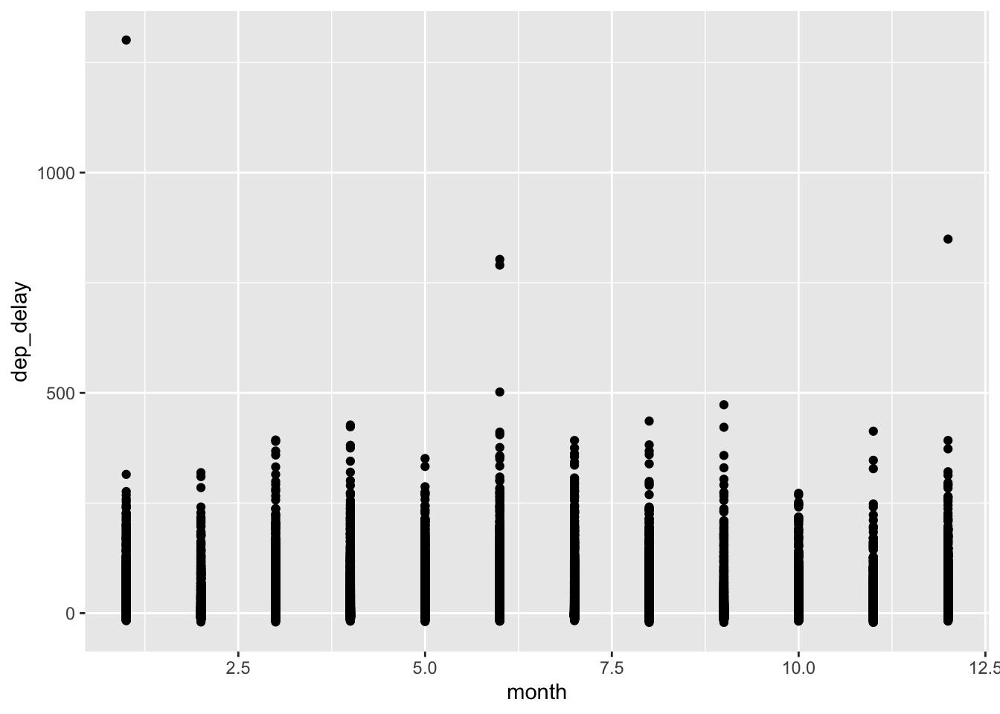
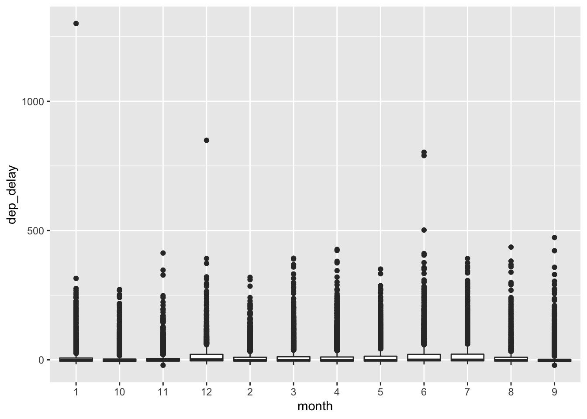
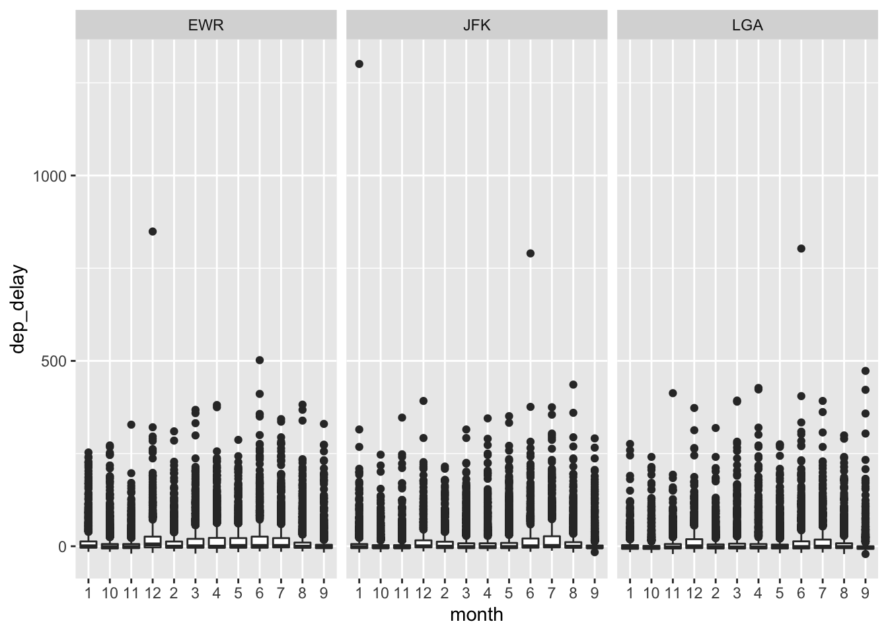
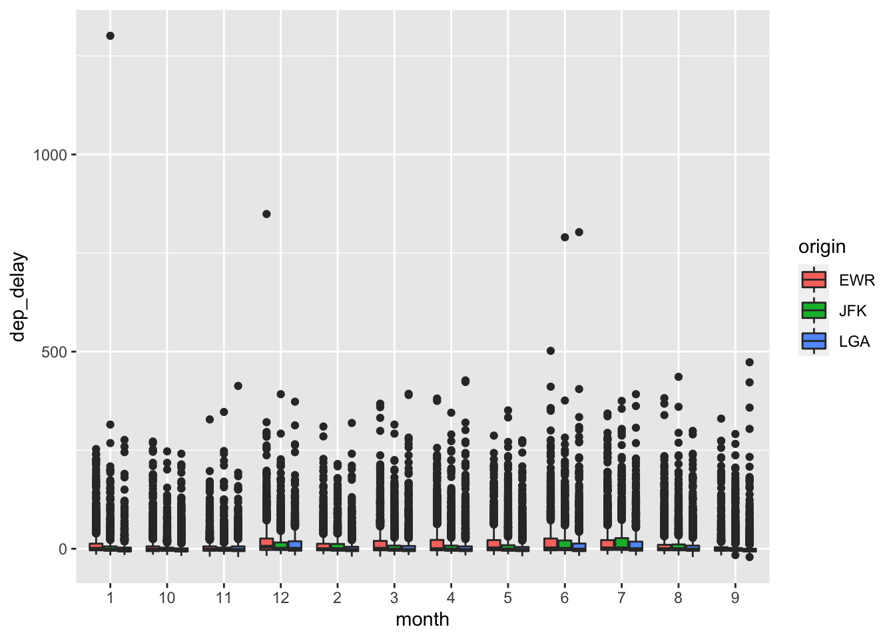

```{r setup}
#| message: false
library(openintro)
library(tidyverse)
```PA 2: Using Data Visualization to Find the Group
Getting Started
We will be creating visualizations using the ggplot2 package. Typically, you would only need to load in this package at the beginning of your document, however the code I’ve provided you also uses a tool from the dplyr package. So, it would be best for you to load in the tidyverse package at the beginning of your document.
For this activity, we will be exploring the nycflights data from the openintro package. So, you will need to install the openintro package.
Creating a Set-up Chunk
- Insert a code chunk at the beginning of your document (directly under the YAML).
- Name the code chunk “setup”.
- Specify that the messages from loading in the packages should not be included
- Load in the tidyverse package
- Load in the openintro package
Part One
Create a scatterplot of the relationship between the departure time (dep_time) and the month of the departure (month).
```{r scatterplot-1}
ggplot(data = nycflights,
mapping = aes(x = month, y = dep_delay)
) +
geom_point()
```
Checkpoint: This plot should be unsatisfying! Think critically about a better way to visualize this relationship.
Hint: Think about what type of variable month behaves like!
Part Two
In order to create the plot we want, month needs to be a character variable, not a numeric variable. Use the code below to convert month into a character data type.
```{r convert-month}
nycflights <- nycflights |>
mutate(month = as.character(month)
)
```- Create a visualization of the relationship between the departure delay (
dep_delay) and the month of the departure (month) that allows for you to discern if there are unusual observations with extremely long delays.
```{r boxplot-1}
ggplot(data = nycflights,
mapping = aes(y = dep_delay, x = month)
) +
geom_boxplot()
```
- Add the origin of the flight (
origin) to your visualization.
Option 1 – facets
```{r add-facet}
ggplot(data = nycflights,
mapping = aes(y = dep_delay, x = month)) +
geom_boxplot() +
facet_wrap(~ origin)
```
Option 2 – color
```{r add-color}
ggplot(data = nycflights,
mapping = aes(y = dep_delay, x = month, fill = origin)) +
geom_boxplot()
```
Part Three
There are two options for how to include origin into your visualization. However, one method will more easily address the following questions.
- During what month did the second longest delay occur at EWR?
Month = 6; June
- During what month did the second longest delay occur at JFK?
Month = 6; June
- During what month did the second longest delay occur at LGA?
Month = 9 ; September
- What unit is departure delay measured in?
minutes